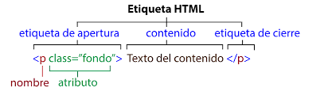
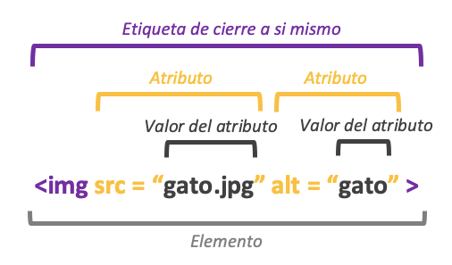
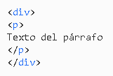
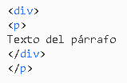
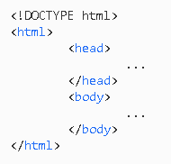
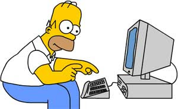

Este sitio tiene como propósito fortalecer, impulsar, fomentar y mostrar la importancia del aprendizaje de HTML y la interacción
humana enfocado en los fundamentos y la relación entre el humano y el ordenador.
Mediante la globalización tecnológica que ha tenido un recurso como el computador y todos los elementos derivados de este, así como
los cambios que se han presentado en la sociedad contemporánea trayendo consigo los retos del nuevo siglo, se ve necesario
mostrar un panorama más claro hacia el usuario final, familiarizándolo con el proceso y un poco de historia de cómo día a día
la sociedad se alimenta de tanta información ahora de forma digital.
Para dar respuesta a ésta necesidad que surge en el aula de clase y en la vida misma es importante abrir nuevos espacios para la
transformación del método de aprendizaje y por consiguiente de los recursos para éste.
Fundamentos HTML
Todas las páginas WEB (referencia a la palabra telaraña o red informatica), cuentan con una serie de elementos HTML, formados por un conjunto de etiquetas y atributos.
Los elementos HTML son los bloques de construcción de una página web. Una etiqueta indica al navegador dónde empieza y termina un elemento, mientras que un atributo describe las características de un
Las tres partes principales de un elemento son:
- Etiqueta de apertura. Se utiliza para indicar dónde empieza a tener efecto un elemento. Esta se envuelve con corchetes de apertura y cierre.
Teniendo a la vez atributos. Por ejemplo, usa la etiqueta de apertura
<p> para crear un párrafo.
- Contenido. Es el resultado que ven los demás usuarios.
- Etiqueta de cierre. Igual que la de apertura, pero con una barra inclinada antes del nombre del elemento. Por ejemplo,
</p> para terminar un párrafo.

Es este caso el atributo class se usa para añadir información a diferentes elementos con el mismo valor de class pero esto es usado más
para efectos de desarrollo y programación.
Sin embargo la norma de etiqueta de apertura y de cierre no aplica en todos los casos y hay ciertas etiquetas que no necesitan de cierrre para funcionar. Como por ejemplo:

En general las etiquetas se pueden anidar pero no se pueden 'cruzar'. Estas dos etiquetas
<p> y
<div>, están anidadas correctamente:

Es incorrecto cruzarlas así:

|
Estructura básica de la página:
La primera línea
<!DOCTYPE ...>
no es propiamente una etiqueta de HTML, sino una declaración o instrucción al navegador sobre la versión de HTML que utiliza la página.
Para la versión HTML5, el tipo de documento es:
<!DOCTYPE html>
El resto del documento HTML está contenido dentro de la etiqueta
<html></html>.
Para indicar el idioma es conveniente añadir el atributo lang="es":
<html lang="es"></html>
Dentro de la etiqueta
<html>, encontramos dos subdivisiones, la cabecera, delimitada por las etiquetas
<head></head> y el cuerpo, delimitado por las etiquetas
<body></body>.
|

|
Interacción Humano Ordenador
La disciplina que estudia cómo las personas interactúan con las computadoras y hasta qué punto las computadoras se desarrollan para interactuar
con las personas se llama Interacción Humano-Computadora. HCI consta de tres componentes: los usuarios, los ordenadores y la interacción entre ellos.
La Interacción Humano-Computadora se convirtió oficialmente en una disciplina con el advenimiento de la computadora personal. Con el primer Macintosh, IBM PC 5150 y
Commodore 64 utilizados en la oficina, la gente empezó a darse cuenta de cómo esta transición afectará no sólo a su trabajo sino a sus vidas en general.
Los PCs fueron lanzados con muchas nuevas características como procesadores de texto, facilidades de juego y ayudas de contabilidad. Con el tiempo, su nivel de sofisticación
aumentó hasta el punto en que el objetivo era hacer que la interacción hombre-computadora se asemejara a la interacción entre humanos, de la forma más natural y sin fisuras posible.
En los últimos cinco años, HCI ha pasado rápidamente de estudiar la interacción con los ordenadores de sobremesa a centrarse casi exclusivamente en los dispositivos móviles.
Usabilidad: La usabilidad es uno de los conceptos clave de HCI. Se trata de hacer que los sistemas sean fáciles de aprender y usar. Mejora la competitividad, la fidelización
de los clientes y reduce los costos. En la fase de prototipado, durante las pruebas de usabilidad, el equipo establece los aspectos positivos y negativos del prototipo antes de seguir
desarrollándolo. Las pruebas de usabilidad se basan en factores psicológicos humanos y en la investigación de los usuarios. Los sistemas se prueban en escenarios de la vida real para
permitir a los equipos tener una imagen detallada de cómo funciona el sistema. La usabilidad es un aspecto significativo de la capacidad de un sistema para completar una tarea.
Es la diferencia entre hacer el mínimo requerido y realizarlo.

Eventos importantes para la HCI:
- La invencion de los tubos de rayos catodicos y el lapiz optico dio origen al desarrollo de tecnicas para la mejora de la interaccióon humano-computadora.
- Una de las primeras tecnicas fue desarrollada por Ivan Sutherland con su programa Sketchpad, desarrollado durante su tesis doctoral en 1963.
- Sketchpad fue el primer programa creado para realizar dibujo por computadora.
- Sutherland, junto con su estudiante Bob Sproull, implemento un sistema de realidad virtual en 1966.
- Dicho sistema permitía a los usuarios con ayuda de un casco simular que entraban a una habitacion y que podían mirar en todas direcciones.
- Dynabook, creado por Alan Key en 1968, era una especie de dispositivo electronico similar a una Tablet. Este dispositivo pretendía acercar a los niños al mundo digital.
Otros Dispositivos y Conceptos Pioneros:
- Primer prototipo de mouse creado por Douglas Engelbart en 1963.
- La metáfora de escritorio introducida por Alan Kay en 1970.
- Uso de ventanas y punteros.
- Dispositivos de entrada/salida como la impresora.